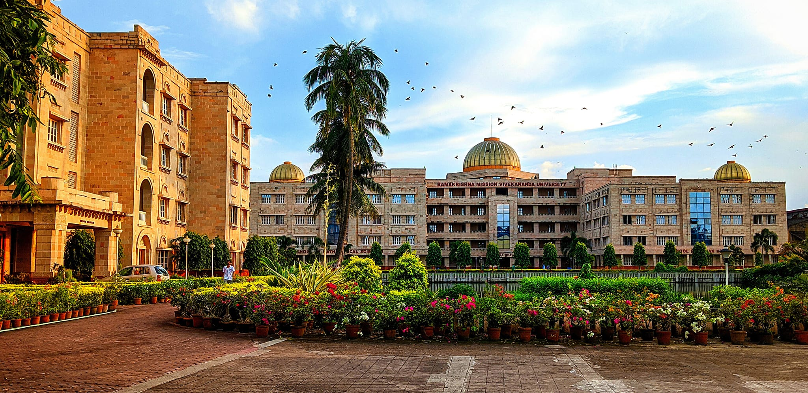

At present following Sanskrit Courses are offered by the department: Integrated MA in Sanskrit (10-semesters, 3 yrs BA+2 yrs MA ) – separate sections for men and women. PhD (6-10 semesters) Communicative Sanskrit: An outreach programme of four-months for people of all age groups.
university photo
 RKMVERI